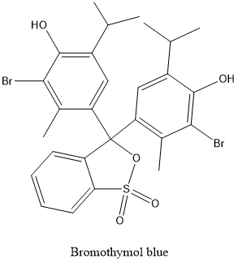
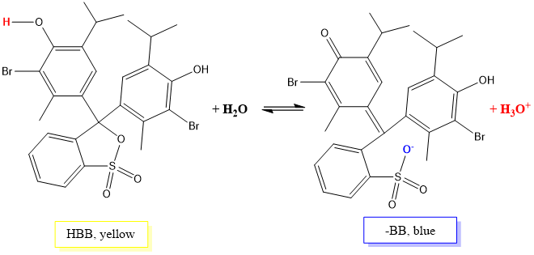
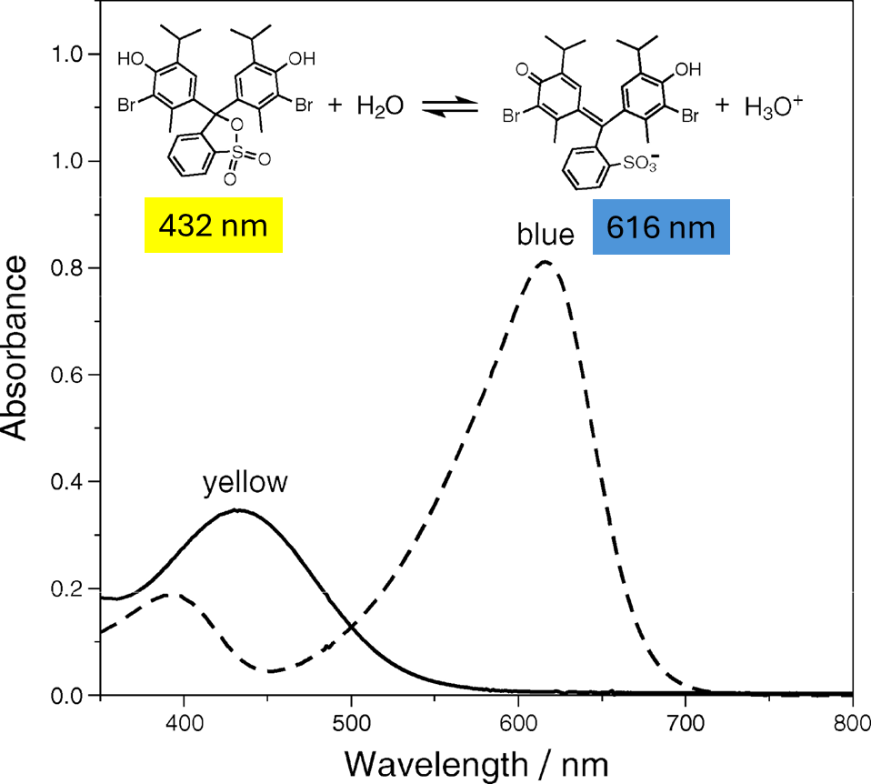

After having completed this lab experiment, students will
Know:
That a weak acid dissociation is reversible and the acid exists in equilibrium with its conjugated base
That bromothymol blue is a weak acid and it is commonly used as an acid-base indicator as it changes color depending on the pH of a solution
What buffer is
Understand:
That the dissociation equilibrium of an acid can be shifted towards either products or reactants by modifying pH of the solution
That the concentrations of both bromothymol blue and its conjugated base in a mixture can be determined by measuring absorbances at the maximum absorbance wavelengths for the protonated bromothymol blue and its conjugated base
Do:
Prepare a phosphate buffer solution
Prepare solutions of bromothymol blue of the same concentration at three different pH values
Measure absorbances of three solutions at 453 and 616 nm
Determine the acid dissociation constant, Ka and pKa, of bromothymol blue by measuring absorbances of bromothymol blue solutions as well as the pH of the buffered neutral bromothymol blue solution and compare it to the bromothymol blue pKa value reported in literature
Suggested Reading
Chemistry: Atoms First from OpenStax, Print ISBN 1947172646, Digital ISBN 1947172638, chapter 14
Experiment Description
In this experiment, you will prepare three aqueous solutions of bromothymol blue of the same concentration at acidic, basic and neutral pH. You will acquire absorbance spectra and measure absorbances of your solutions at two different wavelengths. You will also measure the pH of your neutral solution and use the absorbance values as well as the pH value to calculate the Ka and pKa of bromothymol blue.
Lab To Do Check List
TO DO before coming to the lab:
Read the lab manual
Do the pre-lab quiz to gain access to the datasheet and the lab report
Print off the data sheet and bring it with you to the lab
Write your personalized procedure and bring it with you to the lab to be signed by your TA (2 points).
Bring your student ID card, lab safety glasses and lab coat
TO DO during the lab:
Follow the procedure to prepare bromothymol blue solutions and measure its pH and absorbance values
Fill in your data sheet and get it signed by your TA
Clean up
TO DO after the lab:
Complete your lab report form using the template provided on MyCourses
Submit your signed data sheet and personalized procedure as well as your filled report template form in .pdf format on MyCourses within 2 days from your lab.
Lab Grade Breakdown
This lab grade is 30 points total. The breakdown for this lab is as follows.
Points
Item
Requirements
2 points
Personalized procedure
Signed by your TA at the beginning of the lab and submitted electronically on MyCourses within 2 days from your lab
5 points
Pre-Lab quiz
On-line before the lab starts, to be able to access the Data Sheet and the Report Forms
3 points
Datasheet
Signed by your TA at the end of the lab and submitted electronically on MyCourses within 2 days from the lab
20 marks
Lab report
Filled-in individually after the lab and submitted on MyCourses in .pdf format within 2 days after the lab
Background Information
1. Bromothymol blue and it is acid dissociation constant
Bromothymol Blue (HBB, Figure 1) is a weak acid with a pKa of 7.10. It is used in titrations as an acid-base indicator as it changes color depending on the pH of the solution.

Bromothymol blue
In water, bromothymol blue (HBB) will dissociate/ionize to produce H3O+ ions and a conjugated base BB- according to the following equation (Figure 2). The protonated form of bromothymol blue is yellow (at pH <6), whereas a deprotonated form is blue (at pH >7.6). When both species are present in solution, the solution has a some shade of green color. (pH 6-7.6)

Dissociation of bromothymol blue in water
Let us rewrite the above equation in an abbreviated form (eq. 1):
HBB + H2O BB- + H3O+ (1)
As bromothymol blue (BBH) is a weak acid, it does not dissociate completely in water, meaning that BBH exists in an equilibrium with BB-. A corresponding equilibrium constant of acid dissociation, Ka for bromothymol blue can be written as.
(2)
If we take a logarithms on both side of the equation we can re-write the equation as
or
therefore
(3)
This rearranged form of an equilibrium equation is called the Henderson-Hasselbalch equation (eq. 3).
We know that the Ka is a constant at a given temperature. From the Henderson-Hasselbalch equation we can see that when [HBB]=[BB-], pH = pKa. If the ratio of increases 10-fold, there will be 1 unit increase in pH. On the other hand, if the ratio of decreases 10-fold, there will be 1 unit decrease in pH.
2. Disturbing bromothymol acid-base equilibrium
Let us now look closer at the BBH dissociation (eq. 4).
HBB + H2O BB- + H3O+ (4)
What will happen if we add either a strong base or a strong acid
Scenario 1. Adding a strong base
According to Le Chatelier principle, if we remove H3O+ ions from the right side of the equilibrium equation by reacting it with a strong base such as NaOH (eq. 5), more H3O+ ions will be produced through a dissociation (eq. 4) until the equilibrium is reestablished.
H3O+ + OH- 2H2O (5)
The strong base will also be reacting with HBB at the same time, producing BB- and H2O.
HBB + OH-BB- + H2O (6)
Both reaction (2) and reaction (3) go to completion, meaning the equilibrium constants in these two reactions are very large and the equilibrium is completely shifted to the right.
If we keep adding base, eventually all the HBB and H3O+ will be consumed and there will be only BB- and H2O present in solution. If we continue adding the strong base after all the acid is consumed, the pH will keep increasing according to the amount of base being added.
Scenario 2. Adding a strong acid
On the other hand, if we start increasing the concentration of H3O+ ions by adding a strong acid such as HCl, the equilibrium will shift to the left toward protonated BBH in order to reestablish equilibrium. If the pH is very acidic, we can assume that the only species present is BBH. For example, at pH=1, there will be ~ 106 more HBB present than BB-
pH range in this experiment
In this experiment, we will be studying bromothymol blue solutions at three different pH values, acidic, basic and neutral. Based on our acid-base equilibrium analysis, we can predict that in an acidic solution predominately BBH will be present, in a basic solution predominately BB- will be present and in a neutral solution both species will be observed.
We will prepare all three solutions from a stock solution of bromothymol blue sodium salt (BB-Na+)in a phosphate buffer with a pH around 7. When BB-Na+dissolves in water, it fully dissociates to BB- and Na+ (eq. 7).
BB-Na+(aq) BB- + Na+ (7)
We need to remember that, as BB- is a conjugated base of the weak acid HBB, it is also a weak base and we can write its equilibrium in water as
BB- + H2O HBB + -OH
This equilibrium is shifted to the left with BB- species predominately present. When BB-Na+ solution is added to a neutral buffer (pH ~ 7), some HBB will be produced. Thus, in a neutral pH buffer BB- will exist in equilibrium with HBB in a ratio dependent on the buffer pH.
For example, at the pH=7.00 we can calculate from the Henderson-Hasselbalch equation (eq. 3) that for HBB dissociation the logis -0.10 and the = 0.79, meaning that there is about 1:1.26 ratio of BB- to HBB in the equilibrium mixture.
3. Using absorbance spectroscopy measurements to determine the Ka and pKa values of bromothymol blue
In this experiment we will be calculating the Ka and pKa of the HBB by finding the concentrations of HBB and BB- at equilibrium through the absorbance measurements and directly measuring concentration of [H3O+] using a pH meter.
Beer-Lambert Law
In dilute solutions, the absorbance at a given wavelength depends linearly on analyte concentration, c and can be expressed through the following equation, which is called the Beer-Lambert Lawor Beer's law:
\begin{align*} A = \epsilon bc\\ \end{align*}
Where:
\(c\)
:
molar concentration (M or mol L-1)
ε
:
molar absorption or molar extinction coefficient (M-1 cm-1)
\(b\)
:
the length of the light path (cm)
Absorbance of bromothymol blue
Both protonated and deprotonated forms of bromothymol blue absorb in visible region, which allows to use this compound as an indicator in acid-base titrations.
Absorbance spectra for the HBB (yellow, pH<6) and BB- (blue, pH>7.6) species are shown on Figure 3. The maximum absorbance for HBB is at 432 nm and for -BB is at 616 nm. As we can see from the spectra, the yellow species does not absorb at 616 nm and the blue species has very little absorbance at 432 nm. Which will allow us to determine the concentration of each species independently, even if both of them are present in the solution.
In this experiment, we will be measuring HBB absorbance at 453 nm, where the absorbance of HBB is still close to maximum and the absorbance of BB- is at its minimum as we can see from the absorbance spectra.

Absorbance of bromothymol blue in visible region at low pH (solid line, yellow) and at high pH (dashed line, blue). From J. Chem. Educ. 2011, 88, 5, 637-639
As mentioned earlier, at the pH values between 6-7.6, HHB is in equilibrium with BB- and the color of the solution is green as a result of both yellow and blue species present in the solution simultaneously.
Calculating Ka of bromothymol blue using absorbance spectroscopy
1) Expressing [HBB] and [BB-] via absorbance
From Beer-Lambert law, we find that the concentration (c) = A/εb. Knowing that HHB and BB- each have a different absorbance maximum, we can calculate the concentrations of HBB and BB- in our green solution as
[HBB]green = and [BB-]green =
Where:
Agreen453nm Absorbance of green bromothymol solution at 453 nm
Agreen616nm Absorbance of green bromothymol solution at 616 nm
blength of the light path
εyellow453 the molar absorption of HBB at 453 nm
εblue616 the molar absorption of BB- at 616 nm
We can then re-write the equation for Ka as eq. 8:
(8)
2) Expressing εyellow453and εblue616 through absorbances
In order to determine the values of εyellow453and εblue616 we will be measuring absorbances of strongly acidic (yellow) and strongly basic (blue) bromothymol blue solutions, to make sure only one species is present at a time.
Using the Beer's law, we can write the following expressions for [HBB(yellow)] and [BB-(blue)]:
[HBB(yellow)] =
[BB-(blue)] =
In this experiment, all three solutions of bromothymol blue (yellow, blue and green) that you will prepare, will have the same concentration of bromothymol blue. Therefore, we can assume that for our experiment, since [HBB(yellow)] = [BB-(blue)], then
If we now rearrange this expression to have a ratio of absorption coefficients on the left side, we will have
or
Substituting the with in the Ka equation, we will get the following expression for the Ka of bromothymol blue (eq. 9):
(9)
Safety, Apparatus and Chemicals
Apparatus
Item
Quantity
150 mL beaker
1
50 mL beaker
3
250 mL beaker (for waste)
1
graduated cylinder, 25 mL
1
Stirring bar, small
1
5 mL volumetric pipette
1
1 mL volumetric pipette
1
pipette bulb
1
cuvettes
4
Spectrophotometer
1
Vernier tablet
1
pH meter with electrode
1
pH 7.0 and 4.0 buffers for pH electrode calibration
Chemicals
Chemical
Quantity
Bromothymol blue sodium salt, 0.04% solution
20 drops
sodium phosphate monobasic, NaH2PO4
0.35 g
sodium phosphate dibasic, anhydrous, Na2HPO4
0.4 g
1 M hydrochloric acid, HCl
1 mL
1 M sodium hydroxide, NaOH
1 mL
Deionized water, H2O
50 mL
Procedure
Part 1. Preparing a phosphate buffer
Weigh 0.35 g of NaH2PO4 and 0.4 g of Na2HPO4 and transfer the salts to the 150 mL beaker.
Add 50 mL of DI H2O to the beaker, add a stirring bar and stir the mixture on a stirring plate to dissolve the salts.
Your phosphate buffer solution is ready.
Part 2. Preparing buffered bromothymol blue solution
Add 20 drops of 0.04 w/w% bromothymol blue sodium salt indicator solution to the buffer solution you prepared in Part 1 while stirring
The solution should be green at this point
If the solution is green, skip the next two steps
If your solution is blue, add 1M HCl drop by drop while stirring until the color changes to green
If your solution is yellow, add 1 M NaOH drop by drop while stirring until the solution turns green
Part 3. Calibrating of a pH meter and measuring the pH of the buffered bromothymol solution
Connect the pH meter to the Vernier
To show the pH meter, tap on in the top left of the screen.
If you do not see any pH reading bar, go to Sensors/Sensor Setup and click on the channel to which your pH probe is connected.
The sensor menu will appear. Scroll down to pH/mV/OPR amplifier, click on it and then choose pH from the new drop down menu.
Click on "OK"
One you are back to the main screen, from the top menu tap on Sensors and choose Calibrate and then CH 1: pH.
Tap on .
For the first calibration point, rinse the pH sensor with distilled water, and then place it into a buffer of pH 4.00.
In the box next to Value 1 type in 4.
Swirl the sensor, wait until the voltage displayed next to Live voltage stabilizes and tap on in the bottom right of the display.
Rinse the pH sensor with distilled/deionized water and place it into a buffer of pH 7.00.
In the box next to Value 1: type in 7.
Swirl the sensor, wait until the voltage displayed listed next to Live voltage stabilizes and tap on in the bottom right of the display.
To show the pH meter, tap on in the top left of the screen.
Using a pH meter connected to the Vernier table, measure the pH of the buffered bromothymol solution and record it on your Data Sheet.
Part 4. Preparing bromothymol solutions at acidic, neutral and basic pH
Transfer 5 mL of the buffered (green) bromothymol blue solution using a volumetric pipette into each of the three 100 mL beakers
Using a burette, add 1 mL of 1M HCl to one of your beakers, gently swirl the beaker to obtain a homogeneous yellow solution.
Using a burette, add 1 mL of 1M NaOH to one of the two remaining beakers gently swirl the beaker to obtain homogeneous blue solution.
Use a 1 mL volumetric pipette to add 1 mL of deionized water into your third beaker. This solution should remain green.
You now have one yellow solution (only HBB present), one blue solution (only -BB present) and one green solution (both HBB and -BB present in equilibrium)
Measure the pH of the blue, green and yellow solutions and report in the Data Sheet
Part 5. Acquiring absorbance spectra and recording absorbances of bromothymol solutions at different pH.
Fill around ¾ of a clean cuvette with water and cap it to prepare a blank sample. Wipe the cuvette with paper tissue to ensure it is dry and transparent.
Fill another cuvette with yellow solution(again ¾ full), cap it and wipe it.
Connect your spectrophotometer to the Vernier device.
Click on the "File, New"
Click on the graph icon at the top right corner of the display to switch to the spectrum acquisition window.
Once in the acquisition window, click on the green arrow at the bottom of the screen.
The spectrometer will take a dark sample and perform a lamp warm up. You can click on "Skip warm up" when the option becomes available.
Next, insert the cuvette with DI H2O into the cuvette holder and click on "Finish Calibration".
Once the calibration is finished, replace the blank with your yellow solution sample. Keep the cuvette with DI water aside.
Click "OK".
The acquisition will start immediately and the spectrum acquisition window will appear.
Once you see the absorbance spectrum, click on the red square button at the bottom left corner to stop acquisition.
Position your cursor at the 453 nm wavelength and record the absorbance value on the Data Sheet
Position your cursor at the 616 nm wavelength and record the absorbance value on the Data Sheet
Save your run by pressing the icon on the right side of the screen.
Replace the cuvette with blue solution and press to acquire a new spectrum.
Record the absorbance values at 453 nm and 616 nm on your data sheet.
Save your run by pressing the icon on the right side of the screen.
Repeat for the green solution.
Click on "Run 1" button on the top right and select "All runs" from the drop down menu. A screen with all three acquired spectra will appear. Click on "File/Send/Graph" to send yourself all the spectra on one graph.
Enter your McGill email in the new window under "To:", the name of your file under "Subject", e.g. "yellow sample" and click "Send".
Check your email to make sure you received the document.
Remove the cuvette and put it aside.
Part 6. Clean up
Discard all your solutions into a yellow waste container in the fume hood.
*This experiment was adapted from J. Chem. Educ. 2011, 88, 5, 637-639
Extra Problems
Write down the chemical equation for the reaction being studied.
HBB + H2O BB- + H3O+
What species will be measured spectrophotometrically and what color is it?
HBB - yellow and BB- - blue
State Le Chatelier's principle
When a chemical system in a state of equilibrium is disturbed, it reattains equilibrium by undergoing a net reaction that reduces the effect of the disturbance.
How are we going to determine the absorption coefficients for HBB and BB- in this experiment?
We are going to measure absorbances of each individual species and since their concentration is the same, we will be able to use Ayellow453nm/Ablue616nm to substitute for
Write down the final expression for the Ka for bromothymol blue using the absorbance values
 in the top left of the screen.
in the top left of the screen. .
. in the bottom right of the display.
in the bottom right of the display.


 icon on the right side of the screen.
icon on the right side of the screen.  to acquire a new spectrum.
to acquire a new spectrum.